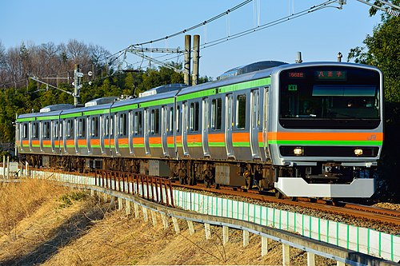

八高線における電化区間になっている。八高線の区間は高麗川までであるが、川越線である川越駅まで直通運行されていることが多い。
八高線区間の停車駅は、八王子、北八王子、小宮、拝島、東福生、箱根ヶ崎、金子、東飯能、高麗川駅の9駅。4両編成。
もともとは中央線まで直通運転されることがあったが、2022年3月12日にワンマン運転開始に伴って終了した。
高麗川～高崎駅の区間よりも本数が多く、約30分に1本程度運行している。
E231系3000番台の外観
画像の出典
参考文献